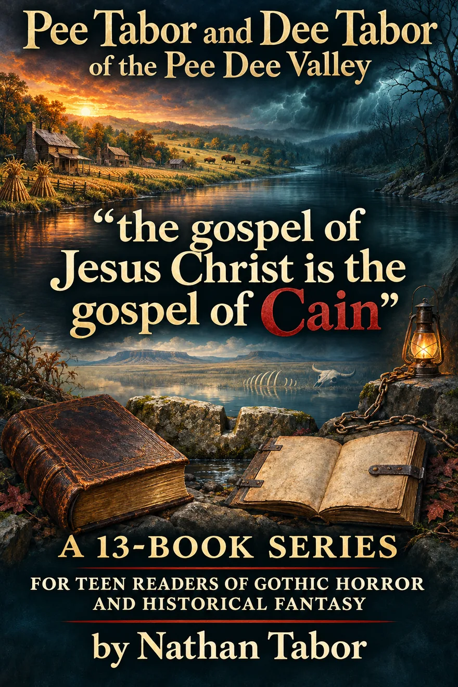

A 13-book series for teen readers of Gothic horror and historical fantasy
Pee Tabor and Dee Tabor of the Pee Dee Valley
The Gospel of Cain
Pee and Dee know the paths, the people, and the sound of the river. In Book 7, a surveyor arrives at their ford. The river reflects his horse. It has no reflection of him.

“the gospel of Jesus Christ is the gospel of Cain”
Dee Tabor, Book 11
Read the series
THE NATHAN TABOR WAY
IM COMING TO GETCHA (song on Pandora - Roman’s 13:4)…. The truth WILL NOT BE SUPPRESSED AND MANIPULATED SO A-Z CAN BE RAPED AND PILLAGED